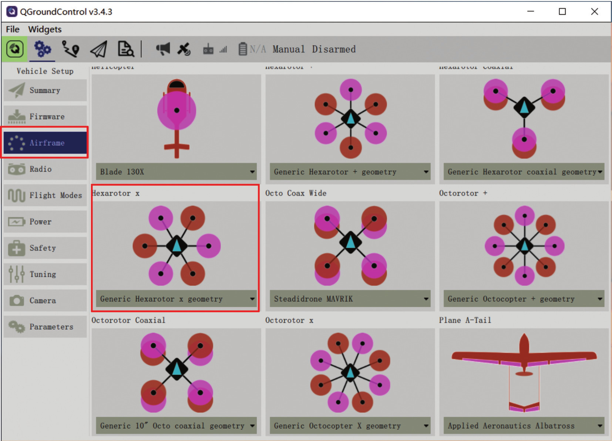

2. CopterSim¶
2.1. RflySim高级版安装方法¶
注册方法如下：
（1）从 https://rflysim.com 可以获取到RflySim高级版的安装包和序列号，在MATLAB中运行“OnekeyScript”指令，会弹出序列号激活窗口。
图 2.1 CopterSim 注册界面¶
（2）输入序列号后，点击“确认”按钮，在弹出页面中配置好安装选项，即可一键完成所有高级功能的自动安装。
CopterSim 注册完成界面如下，主要分为五大部分。图 (a) 是多旋翼模型与飞行环境界面，主要用于选择动力系统组件组成不同类型的多旋翼，用于后续仿真。图 (b) 是模型参数计算与数据库管理界面，主要用于计算所组装多旋翼的模型参数，并将结果存入数据库方便后续使用，这里也提供了方便的数据库管理功能。图 (c) 是高级功能区，包括集群多机仿真、UE4 场景选择等功能，将在后文详细介绍。图 (d) 主要用于连接 Pixhawk 自驾仪，并控制仿真的开始与停止。图 (e) 用于实时显示 Pixhawk自驾仪返回提示消息，并显示仿真模型的位置、姿态等信息。
图 2.2 CopterSim 注册完成界面¶
2.2. 自定义多旋翼仿真模型¶
在模型配置界面，可以输入的数据包括整机质量、机架轴距和飞行海拔等飞行器基本信息，以及用于组件多旋翼的动力系统组件或参数，例如电机、螺旋桨、电调和电池等。CopterSim 提供两种选择动力系统组件的方法，第一种是直接从动力系统品牌型号数据库中，选择市面上常见的动力系统组件产品来组装多旋翼。 由于动力系统的品牌型号产品数据库难以把世界上的产品全都包含进去，对于更高自由度设置多旋翼的需求，CopterSim 也提供了自定义动力系统组件参数功能。
图 2.3 自定义模型参数输入界面¶
单击第一行最后的“自定义”选项，即可进入组件自定义参数界面。在该界面中，读者可以自定义地输入电机(KV 值、空载电压、内阻）、电调、电池和螺旋桨的详细参数信息。理论上通过“自定义”设计功能，可以模拟任意动力系统组件，甚至是市面上不存在的产品。 在配置完一个多旋翼后，单击“计算”按钮程序就会自动分析读者选择的配置的合理性。不合理的多旋翼配置会导致仿真失败，例如，出现拉力不足无法起飞、电池电压超限烧坏电调和电机，或者螺旋桨尺寸超过机身可容纳尺寸等错误。CopterSim 在检测输入的多旋翼配置后，如果配置不合理就会给出错误提示，用户需要重新选择合理配置。
图 2.4 模型配置合理性检测提示界面¶
对于初学者或者对多旋翼设计不够了解的读者来说，配置一架可以正常飞行的多旋翼都较为困难。因此 CopterSim 还提供了通过模型数据库直接选择飞机配置的功能。
图 2.5 机型数据库直接选取飞机模型¶
在“机型数据库”的下拉列表中，读者可以选择预先配置好的多旋翼配置（或者在此基础上修改配置参数）来快速得到可用的多旋翼模型。
2.3. 设定仿真时飞机初始状态¶
CopterSim 提供了多旋翼初始状态设置功能。
图 2.6 设置仿真初始位置¶
可以在初试位置设置栏输入多旋翼的 x 和 y 坐标（单位：m）和偏航角 yaw 的值（单位：度），其中 x和y 的方向分别指向多旋翼的前和右，机头向右转则偏航角为正。
2.4. 其他类型多旋翼的硬件在环仿真¶
之前的实验需要通过QGC 地面站设置Pixhawk 自驾仪进入“HIL Quadcopter X”机架模式，这个模式只支持四旋翼 X 字型的硬件在环仿真，因此在实用性方面具有一定的局限性。实际上，CopterSim 不仅支持四旋翼的硬件在环仿真，还可以用于所有 PX4 自驾仪支持的多旋翼类型。具体步骤如下： （1）在 QGC 地面站中选择多旋翼机架
1）确保 QGC 地面站正确连接 Pixhawk 自驾仪；2）在 QGC 地面站的“Airframe”标签页选择需要的多旋翼机架(如六旋翼、八旋翼、共轴双桨等)；图 2.7 QGC 中选择需要的多旋翼机架¶
3）在该机架的下拉列表中选择对应的机架尺寸(如 F450、3DR DIY Quad 等)，并应用该机架；4）Pixhawk 自驾仪重启之后，确认已经处于选定的机架模式下。
通过上述步骤就可以设置一个可用于实际飞行的机架类型，而且配置了针对该机架尺寸的配套控制器参数。
（2）在 QGC 地面站中选择进入硬件在环仿真模式
QGC 地面站正确连接Pixhawk 自驾仪后，在 QGC 地面站的“Safety”标签页中，将“HITL Enabled”选项设置为“Enabled”，然后重新插拔 Pixhawk 自驾仪。经过上面的步骤，可以将任意的机架设置进入硬件在环仿真模式。
图 2.8 将“HITL Enabled”选项设置为“Enabled”¶
（3）CopterSim 中选择对应的多旋翼机架
在 CopterSim 中有两种方式可以设置多旋翼的机架类型。第一种是在主界面的“机架类型”下拉菜单中选择；另一种是打开“模型参数”对话框，直接在其中设置机臂数、旋翼数和机头朝向。
图 2.9 CopterSim 中设置多旋翼机架¶
（4）开始硬件在环仿真
以六旋翼为例，通过 QGC 地面站将 Pixhawk 自驾仪的机架类型设置为六旋翼，并在 QGC 地面站中开启硬件在环模式，再在CopterSim 中配置一个六旋翼参数。然后，将 Pixhawk 自驾仪插入计算机，在 CopterSim中选中 Pixhawk 自驾仪的串口，并单击“开始仿真”，即可开始六旋翼的硬件在环仿真。
2.5. 其他机型的硬件在环仿真¶
Pixhawk/PX4 自驾仪除了支持多旋翼，还支持固定翼、垂直起降飞行器、小车、船等机型。为了保证对上述 PX4 官方支持的机型的硬件在环仿真，甚至使读者能自行设置机架类型，CopterSim 还提供了通过 Simulink 生成DLL 模型文件，并进行硬件在环仿真的功能。
（1）CopterSim 中使用 DLL 模型文件
将 Simulink 生成的DLL 模型文件复制到文件夹“CopterSimexternalmodel”中。重新打开 CopterSim 之后，就可以在 “使用 DLL 模型文件”下拉菜单中看到可用的 DLL 模型文件。这些 DLL 模型文件可以仿真任意飞行器或车辆。选中一个 DLL 模型，用 QGC 地面站配置 Pixhawk/PX4 自驾仪之后，就可以在 CopterSim中对特定的机型进行硬件在环的仿真。也可以在UE4 编辑器中加入对应的机体三维模型，形成完整的硬件在环仿真闭环。
图 2.10 选择 DLL 模型进行仿真¶
（2）Simulink 中生成DLL 模型文件的方法
打开 Simulink 生成DLL 模型文件例程文件夹（和安装包一起获取)，打开需要的 Simulink 模型（多旋翼、固定翼、小车等)的.slx 文件。然后在 Simulink 中修改模型参数或者替换部分模块使之满足仿真需求，再单击 Simulink 的“编译”按钮生成 C/C++ 代码。最后，在 MATLAB 中运行“GenerateModelDLLFile”命令，即可生成.dll 格式的DLL 模型文件，然后将该 DLL 文件复制到“CopterSimexternalmodel”文件夹中即可。
图 2.11 Simulink 生成 DLL 模型文件例程¶
由于 Simulink 采用模块化编程方法，在提供的.slx 文件中，可以非常轻松地通过更改参数或部分模块获取不同的飞行器布局。例如，将“Init.m”模型参数初始化脚本中的机架类型参数ModelParam uavType 修改为特定值，可以很方便地得到多旋翼机型。之前的实验课程默认使用多旋翼布局对应 uavType=3，也就是常规的 X 字型四旋翼飞行器。
这些配置与PX4 自驾仪支持的多旋翼机型一一对应，可以参考官网：http://dev.px4.io/master/en/airframes/airframe_reference.html。
图 2.12 Simulink 模型中 uavType 参数对应的机型¶